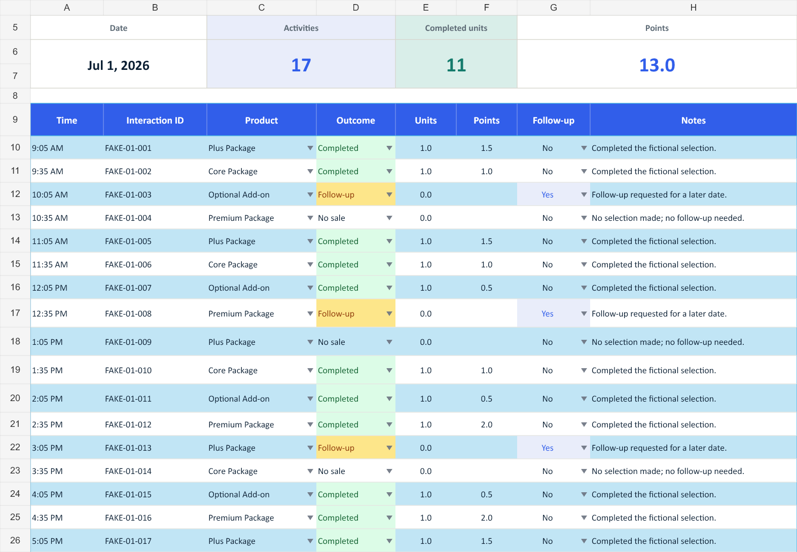
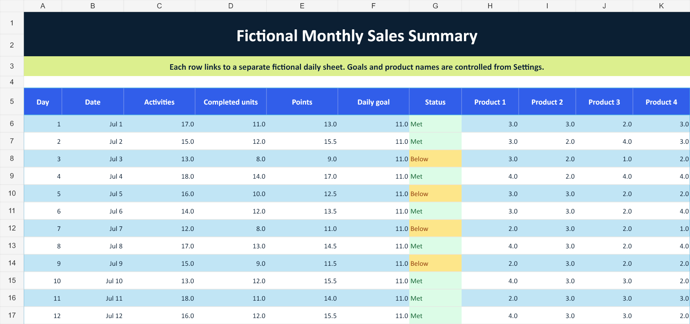
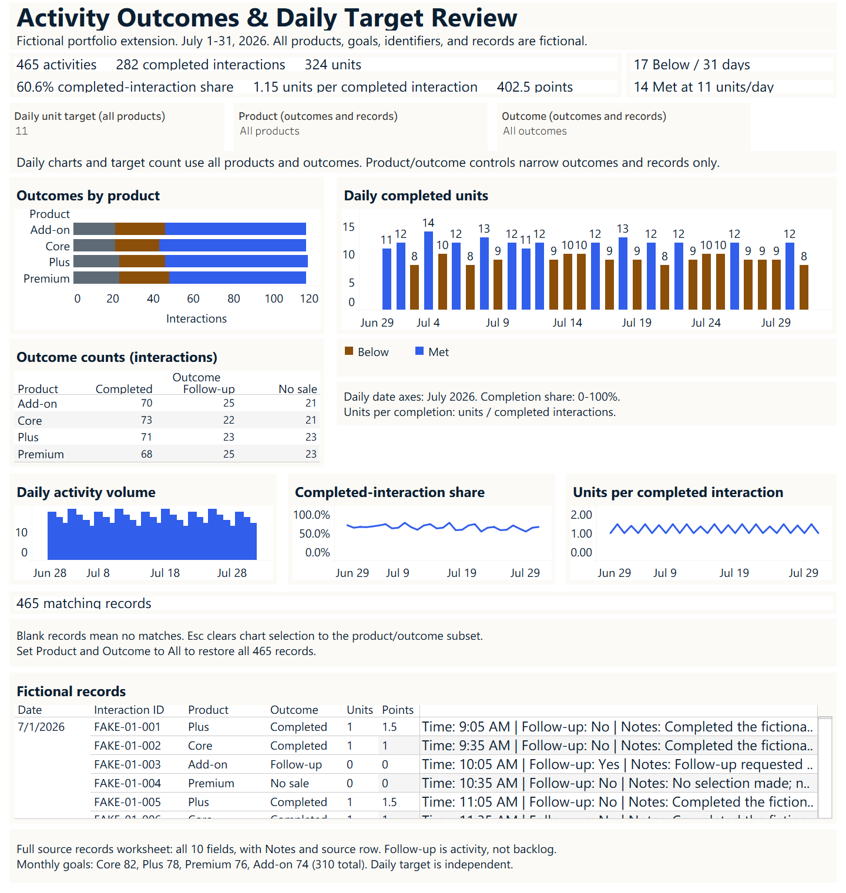

324 completed units against a combined goal of 310.
At Comcast/Xfinity
Why the monthly total came up short
I used my Excel tracker to check my progress toward goals. When I reviewed the monthly formulas, I found they skipped some days. I corrected them so those days counted toward the total.
In the public workbook, formulas pull each day’s figures into one row of Monthly Summary. You can compare that row with the daily worksheet and check exactly what went into the monthly total.
The reporting question
Which target are we measuring against?
The workbook has a monthly goal for each product and a separate daily target for completed units. Changing one leaves the other in place.
July 2026, fictional workbook. The original Excel fix was part of my work at Comcast.
Fourteen days reached 11 units. The other 17 fell short.
At 11 units a day, July’s target adds up to 341. The same 324 units covered 95.0% of that target and 104.5% of the combined monthly product goals. The difference comes from which goal you use.
- 465
- Activities
- 324
- Completed units
- 402.5
- Points
Excel reporting workflow
How a daily entry reaches the dashboard
Settings
Set product names, monthly goals, daily targets, target days, and point values here.
Blue cells mark editable valuesDay 01 to Day 31
Enter each interaction on its day’s sheet. The sheet calculates totals by product and marks whether the day met its goal.
20 entries per day, 620 across JulyMonthly Summary
Each of the 31 rows pulls figures from one daily worksheet. The 11 columns let you compare that day’s results with its goals.
Daily entries update the summaryDashboard
Check completed units against the daily target, then compare each product’s total with its monthly goal.
Four summary figures and two chartsTo check a figure on the dashboard, find the matching row in Monthly Summary, then open that day’s worksheet tab. The example below follows July 1.
Follow one day through the workbook
July 1, from entry to dashboard
These screenshots come from the downloadable workbook.
1. Enter the daily activity
On Day 01, each row records a product, outcome, units, and follow-up status. The daily formulas total 17 activities, 11 completed units, and 13 points. The 10:05 AM follow-up remains visible but contributes no completed units.

2. Check the monthly summary
The first row of Monthly Summary shows the same 17 activities, 11 units, and 13 points. Day 01 met the 11-unit target. Day 03 finished at 8 units, so its status reads Below.

3. Review the whole month
On the dashboard, find July 1 on the daily chart. Its 11 completed units sit exactly on the target line. The bar chart beside it shows how each product finished for the full month.
Excel dashboard
What the July dashboard shows
- 01Which days missed the daily target?
The line chart and status count show 14 days at or above 11 units and 17 below.
- 02Which product beat its goal by the most?
All four products beat their goals. Optional Add-on had the largest margin at 6 units above goal, or 108.1% of its target.
- 03Do the totals reconcile?
Product units sum to 324, matching completed units, while product points sum to 402.5.
Portfolio extension · Tableau
Compare outcomes and daily targets in Tableau
I used the same 465 records for the Tableau workbook. Select a product or outcome to inspect the entries behind a count, or change the daily target to see how many days met it.


Portfolio extension · React
Explore July’s activity records
Try changing the daily target from 11 units to 12. The monthly totals stay the same, but fewer days meet the higher target. Select a day or an outcome count to read the underlying entries.
July’s results appear below. The filters load when JavaScript is available.
July 2026 had 465 activities, 282 completed interactions, 324 completed units, and 402.5 points. Of all interactions, 60.6% were completed. Those averaged 1.15 units each. Fourteen days met the 11-unit target and 17 fell short.
| Product | Completed | Follow-up | No sale |
|---|---|---|---|
| Core | 73 | 22 | 21 |
| Plus | 71 | 23 | 23 |
| Premium | 68 | 25 | 23 |
| Add-on | 70 | 25 | 21 |
The monthly product goals total 310 units. The daily target adds up to 341 over July. A follow-up flag tells you what happened during that interaction. To inspect all the entries, download the CSV.
Design decisions
How I made the workbook easier to check
The daily sheets share the same fields so I can compare one day with another and trace a monthly figure back to its source.
| Decision | Workbook implementation | Why it matters |
|---|---|---|
| Set goals in one place | The Settings sheet holds the product names, goals, target days, and point values. | Change a goal once to update the relevant comparisons. |
| Use the same fields each day | Thirty-one matching tables use validation for product, outcome, follow-up, and units. | Product names and outcomes match across all 31 sheets. |
| Keep a daily summary | Formulas pull the daily figures into Monthly Summary. The dashboard uses those totals. | You can check one day’s totals without editing its entries. |
| Flag days below goal | IF, IFERROR, SUMIF, and COUNTIF calculate totals and goal status. Conditional formatting highlights the results. | Below-goal days and follow-up activity are easier to find. |
| Explain how to use the file | The Read Me sheet explains the workflow and which cells to edit. | Someone opening the file for the first time can find the input cells. |
Validation and QA
Checking the dashboard against the source rows
- 01
Unit reconciliation Four product totals sum to 324, matching completed units.
- 02
Point reconciliation Product-level points sum to the 402.5 dashboard total.
- 03
Status reconciliation 14 Met plus 17 Below accounts for all 31 days.
- 04
Follow-up consistency 95 Follow-up outcomes match 95 Yes flags. Sample notes agree with each row's outcome and flag.
Recommendation
What I’d check before changing the process
I’d first ask whether the daily and monthly goals were set independently on purpose. Then I’d compare activity counts and completed units on the 17 days that fell short.
The workbook can show which days to investigate. To explain why they fell short, I’d also need to know about staffing and demand on those days.
Inspect the work
Excel workbook and build notes
Cross-sheet formulasSUMIF & COUNTIFExcel tablesData validationConditional formattingGoal analysisDashboard reportingProcess documentation
Contact
Contact Jonathan
I’m looking for permanent, full-time work. I’m based in New Jersey and open to remote roles in the U.S., hybrid work, and relocation.